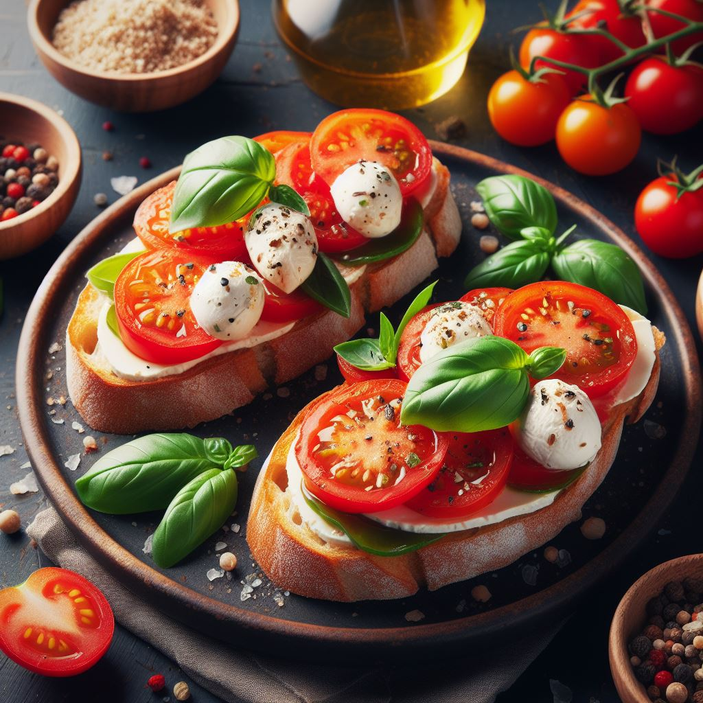
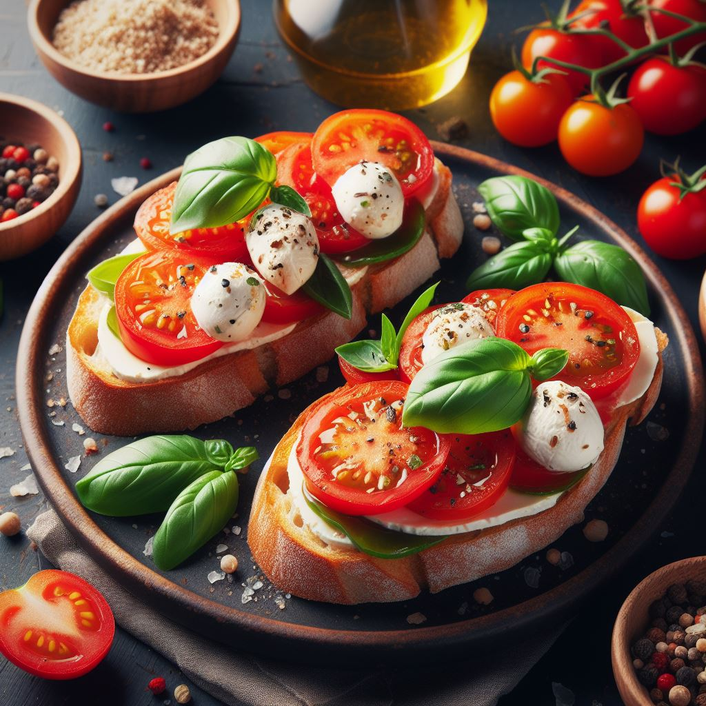
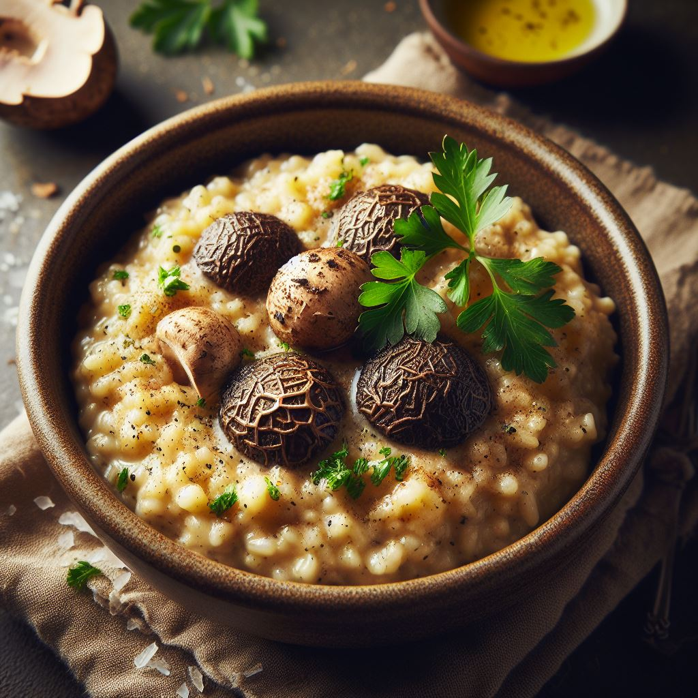
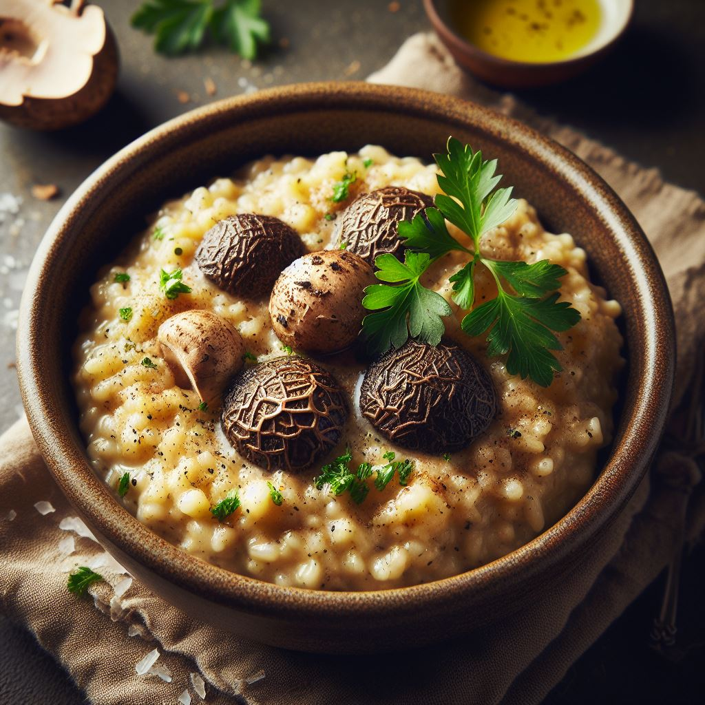

 



Bem-vindo ao Cantinho Gourmet
No coração da nossa amada cidade, encontramos um refúgio gastronômico que vai muito além de simplesmente alimentar o corpo. No Cantinho Gourmet, somos mais do que um restaurante - somos uma experiência culinária que desperta os sentidos e nutre a alma.
Uma História de Paixão e Dedicação
Fundado há mais de uma década, o Cantinho Gourmet nasceu do sonho compartilhado de dois amigos apaixonados pela arte da culinária. Desde então, dedicamos nossas vidas a criar pratos que não apenas deliciam o paladar, mas também contam uma história de amor pela comida.
Nosso Compromisso com a Qualidade
No Cantinho Gourmet, a qualidade é a nossa maior prioridade. Utilizamos apenas os ingredientes mais frescos e selecionados, provenientes de fornecedores locais que compartilham nossa visão de excelência. Cada prato é preparado com habilidade artesanal e cuidado meticuloso, garantindo uma experiência gastronômica verdadeiramente memorável a cada visita.
Um Ambiente Acolhedor e Encantador
No Cantinho Gourmet, você será recebido por uma atmosfera acolhedora e encantadora, onde cada detalhe foi cuidadosamente planejado para criar uma experiência única. Nossa decoração elegante e sofisticada proporciona o cenário perfeito para desfrutar de uma refeição com amigos e entes queridos, enquanto nossos funcionários garantem que você sempre se sinta em casa.
Nossa Missão
No Cantinho Gourmet, nossa missão é simples: encantar e surpreender nossos clientes a cada momento. Queremos ser mais do que apenas um restaurante - queremos ser o seu refúgio gastronômico favorito, onde cada visita é uma celebração da boa comida, boa companhia e boa vida.
Venha nos visitar e descubra por si mesmo o que torna o Cantinho Gourmet tão especial. Estamos ansiosos para recebê-lo em nossa casa e compartilhar nossa paixão pela culinária com você.